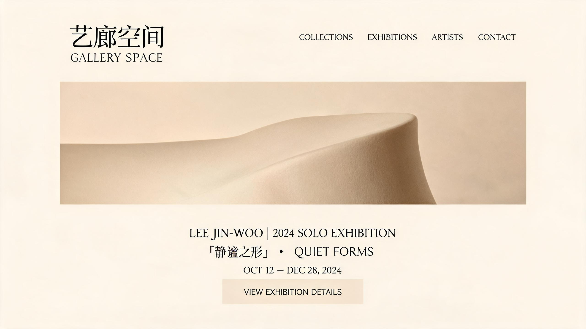

项目背景
艺廊空间是一家关注当代亚洲艺术的画廊，希望重新设计官方网站，以更好地呈现展览、艺术家与作品。网站的目标受众包括收藏家、策展人、艺术爱好者与媒体，需要在专业感与可访问性之间取得平衡。
设计思路
艺术网站的最高原则是让作品成为主角。因此我采用了大量留白、克制的中西文混排与柔和的中性色调。标题使用优雅的衬线风格字体与无衬线字体的搭配，正文则保持极高的可读性。
展览页面以大画幅作品图片为核心，配以极简的展览信息与艺术家介绍。滚动时，图片以缓慢的淡入动画出现，模拟在实体画廊中漫步观展的节奏感。导航始终保持低调，不抢夺艺术作品的视觉焦点。
设计过程
设计开始前，我走访了多家实体画廊，记录观展者的浏览动线与停留行为。这些观察帮助我确定了“大图、少字、慢节奏”的设计方向。随后我完成了 4 套首页方案，与客户共同选择了最具东方留白美学的版本。
技术实现上，我为网站制定了图片懒加载与渐进式加载策略，确保大尺寸艺术作品图片在不影响体验的前提下快速呈现。网站上线后，平均页面停留时间提升了 45%，移动端访问占比达到 38%。